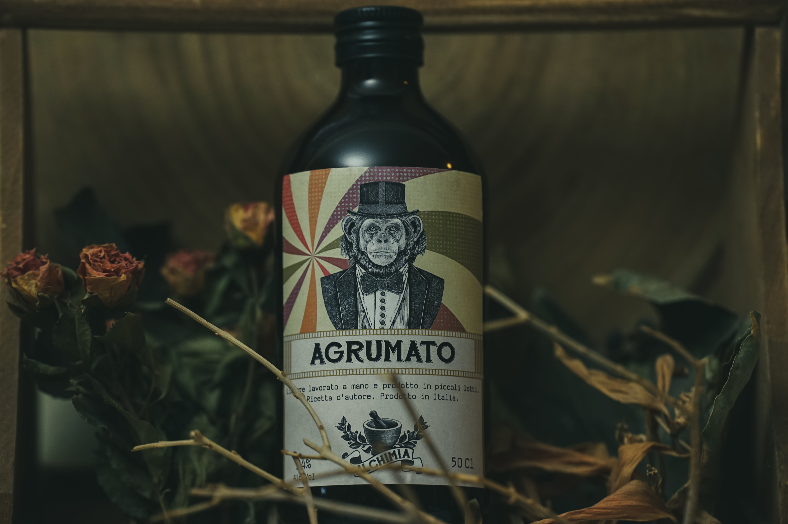

Agrumato

Stufi di bere il classico limonino dopo cena? Provate allora questa semplice ed efficace rivisitazione di un prodotto tradizionale conosciuto da tutti. Il bergamotto sostituisce interamente il limone, donando note davvero peculiari al prodotto. L'arancia amara invece rende più complesso e strutturato il risultato finale. Questi ingredienti sono selezionati e raccolti a mano direttamente dal vivaio.
Floreale
Fruttato
Speziato
Balsamico
Erbaceo
Erbe e spezie
Scorze di bergamotto, scorze di arancia amara.
Desideri acquistare i nostri prodotti?
Inserisci la tua email per essere contattato.